เอกสารนี้สร้างจาก logs ภายใต้ outputs_modes_v3_td เท่านั้น งานที่บันทึกเสร็จ: tuning สำเร็จ 75/75 unique trials; final 75/75 unique seeds.
ใช้ภาพ 560 ภาพใน 4 classes และ canonical grouped split เดิม train 390 / validation 85 / test 85 จาก 550 groups. URL ไม่ทราบ 112 ภาพ. แปลงภาพเป็น RGB, EXIF orientation, resize โดยรักษาสัดส่วนลง canvas 224 × 224 สี neutral RGB (124,116,104), แล้ว normalize แบบ ImageNet. Augmentation ใช้ train เท่านั้น.
เปรียบเทียบ CNN 5 แบบและนโยบายการฝึก 3 แบบ โดยให้แต่ละคู่สุ่มค้น learning rate, weight decay, optimizer และ batch size จาก validation ของตัวเอง ดังนั้น Full, Frozen และ Partial มี hyperparameters ชนะของตัวเอง. ใช้ ImageNet weights, class-weighted cross entropy, AdamW/Adam/SGD และ ReduceLROnPlateau. Frozen ฝึก classifier; Partial เปิด semantic final stage กับ classifier; Full ฝึก backbone ทั้งหมด.
mobilenet_v3_large / partial; selection ไม่ได้ใช้ test scores. test split เคยเปิดดูในงานก่อนหน้า การทดลองใหม่นี้จึงเป็น exploratory บน split เดิม.
| Architecture | Mode | Seeds | Test Macro F1 mean ± sample SD |
|---|---|---|---|
| resnet50 | full | 5/5 | 0.926 ± 0.018 |
| resnet50 | frozen | 5/5 | 0.876 ± 0.017 |
| resnet50 | partial | 5/5 | 0.918 ± 0.021 |
| efficientnet_b0 | full | 5/5 | 0.892 ± 0.015 |
| efficientnet_b0 | frozen | 5/5 | 0.834 ± 0.024 |
| efficientnet_b0 | partial | 5/5 | 0.910 ± 0.027 |
| mobilenet_v3_large | full | 5/5 | 0.899 ± 0.010 |
| mobilenet_v3_large | frozen | 5/5 | 0.887 ± 0.013 |
| mobilenet_v3_large | partial | 5/5 | 0.917 ± 0.031 |
| densenet121 | full | 5/5 | 0.913 ± 0.019 |
| densenet121 | frozen | 5/5 | 0.859 ± 0.016 |
| densenet121 | partial | 5/5 | 0.914 ± 0.019 |
| convnext_tiny | full | 5/5 | 0.913 ± 0.021 |
| convnext_tiny | frozen | 5/5 | 0.852 ± 0.025 |
| convnext_tiny | partial | 5/5 | 0.907 ± 0.018 |
| Architecture | Mode | Learning rate | Weight decay | Optimizer | Batch | Trial |
|---|---|---|---|---|---|---|
| resnet50 | full | 0.000194 | 0.00195 | adam | 16 | 5 |
| resnet50 | frozen | 0.000333 | 0.00139 | adam | 16 | 3 |
| resnet50 | partial | 0.000194 | 0.00195 | adam | 16 | 5 |
| efficientnet_b0 | full | 0.000248 | 2.38e-06 | adam | 32 | 2 |
| efficientnet_b0 | frozen | 0.000353 | 5.7e-05 | adam | 32 | 1 |
| efficientnet_b0 | partial | 0.000333 | 0.00139 | adam | 16 | 3 |
| mobilenet_v3_large | full | 0.000194 | 0.00195 | adam | 16 | 5 |
| mobilenet_v3_large | frozen | 0.000194 | 0.00195 | adam | 16 | 5 |
| mobilenet_v3_large | partial | 0.000194 | 0.00195 | adam | 16 | 5 |
| densenet121 | full | 0.000194 | 0.00195 | adam | 16 | 5 |
| densenet121 | frozen | 0.000333 | 0.00139 | adam | 16 | 3 |
| densenet121 | partial | 0.000333 | 0.00139 | adam | 16 | 3 |
| convnext_tiny | full | 0.000248 | 2.38e-06 | adam | 32 | 2 |
| convnext_tiny | frozen | 0.000333 | 0.00139 | adam | 16 | 3 |
| convnext_tiny | partial | 0.000194 | 0.00195 | adam | 16 | 5 |
ผล class-specific อยู่ใน final/per_class_summary.csv. Confusion matrix มีทั้งจำนวนภาพและสัดส่วนต่อ true class ต่อ run.
Calibration ใช้ Expected Calibration Error 10 bins จาก confidence ของ predictions หลัง final; ตาราง/รูปแยก architecture × mode × seed อยู่ใน confidence/.
สถานะ paired tests: {"ok": 58}. อ่านค่า effect size, p และ adjusted p ใน final/statistical_tests.csv; ค่า undefined/incomplete ไม่ใช่ผลไม่มีนัยสำคัญ.
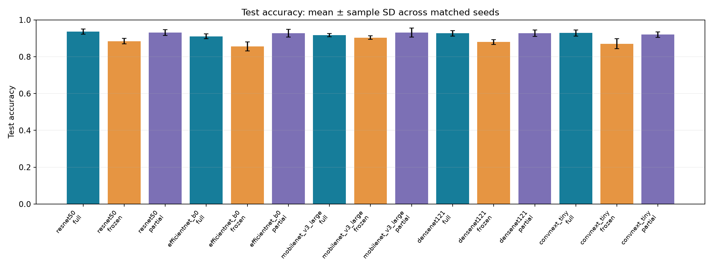
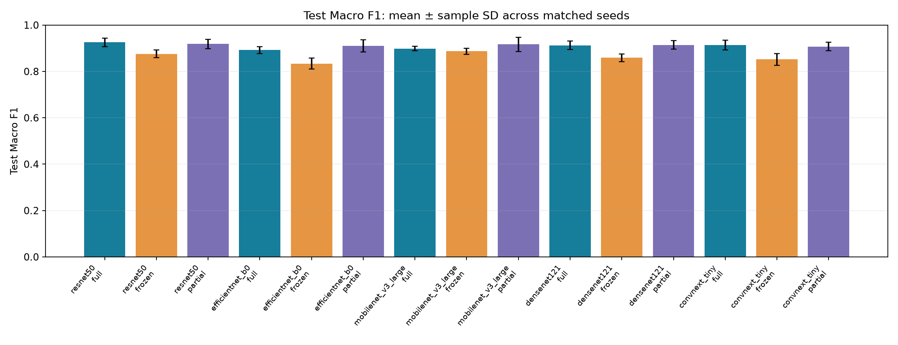
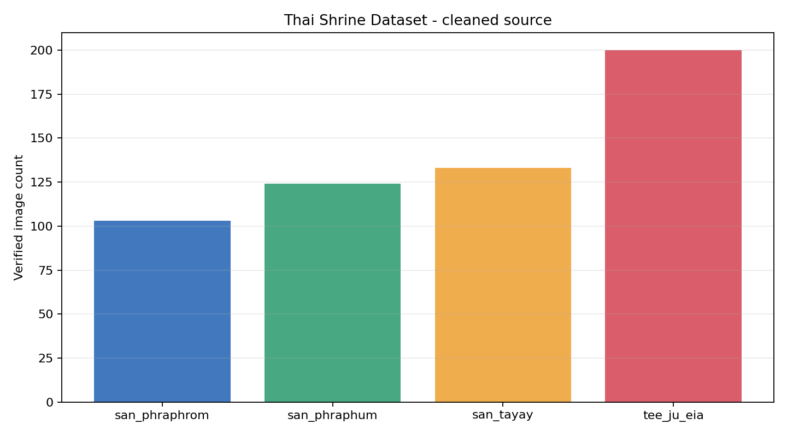
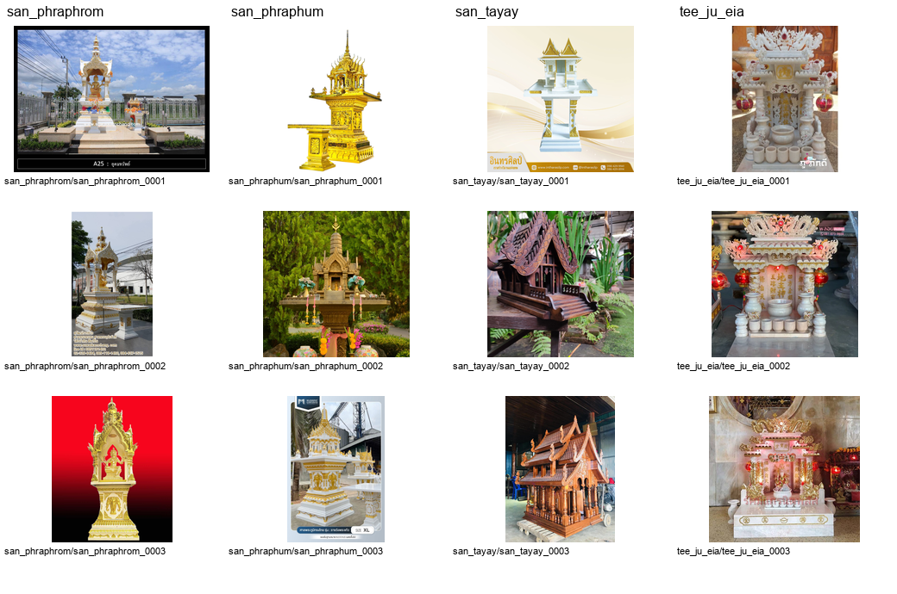
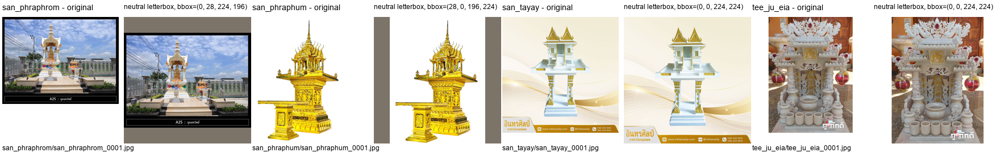
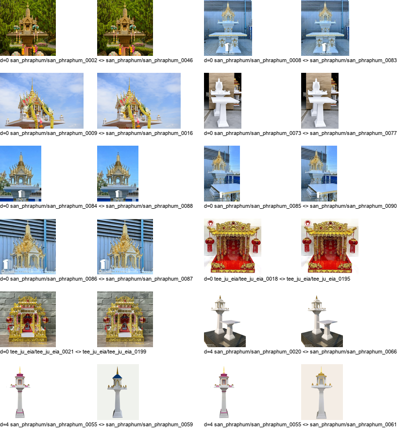
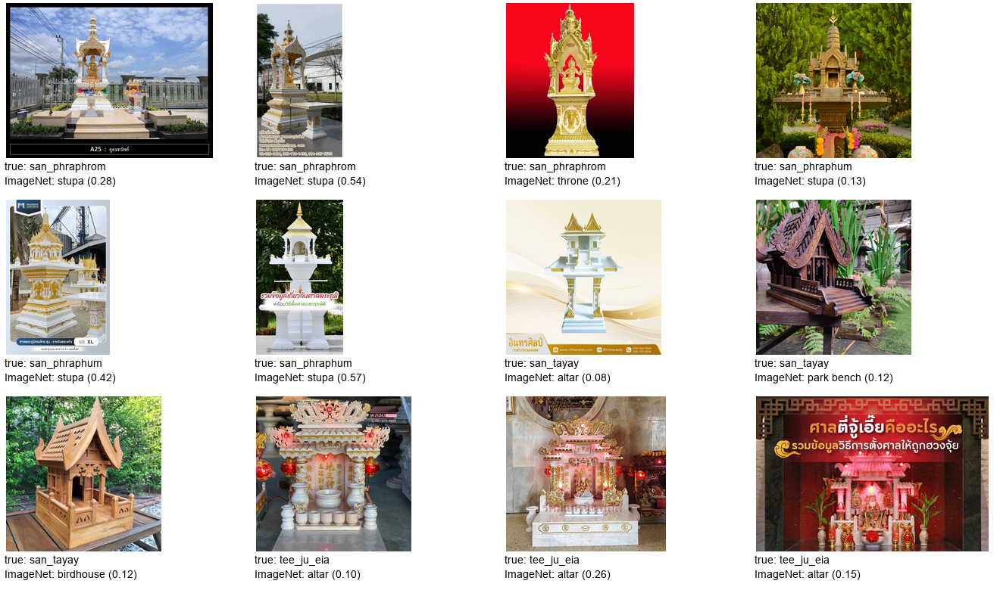
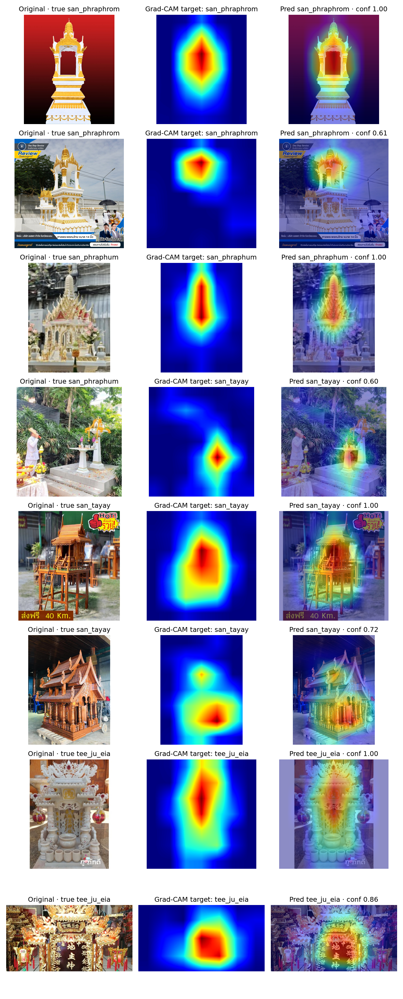
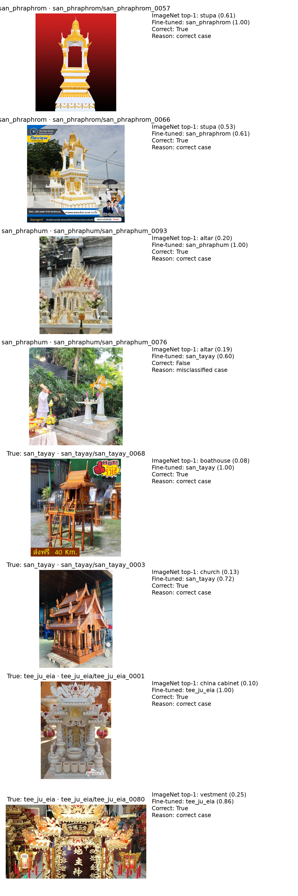
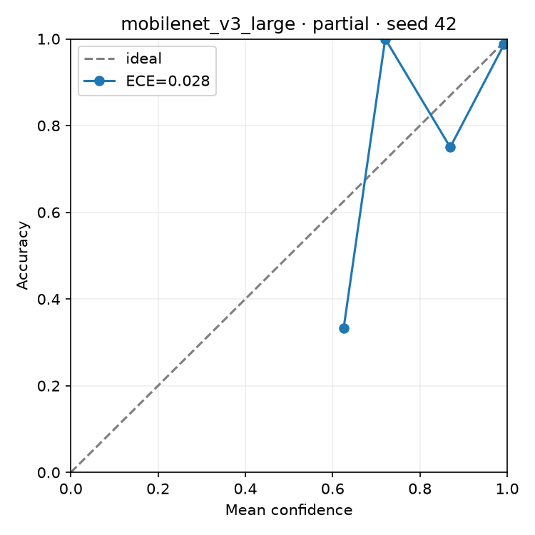
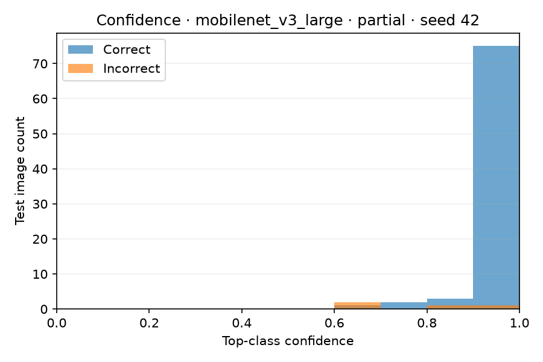
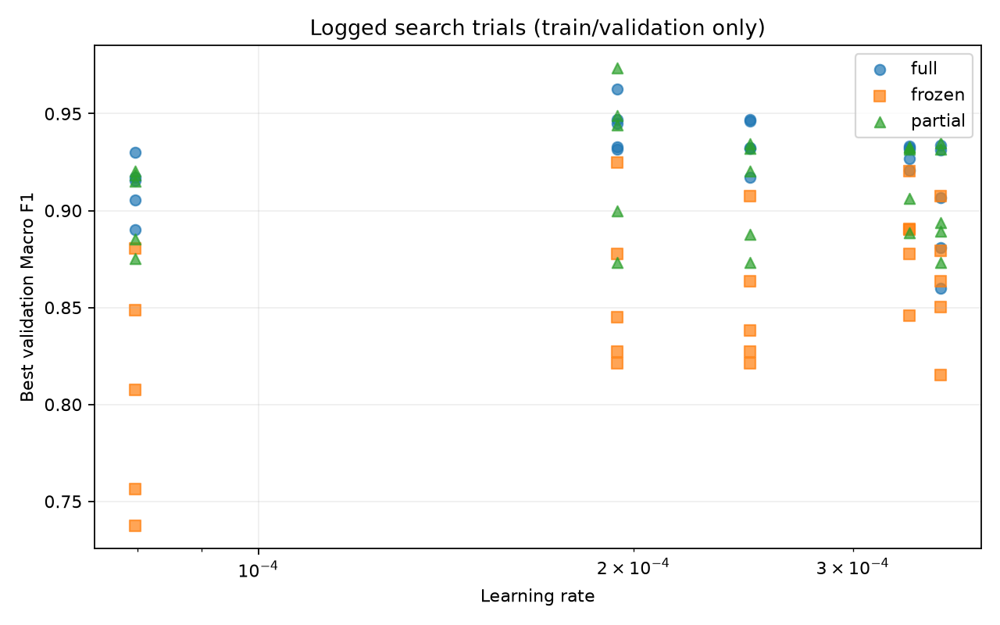
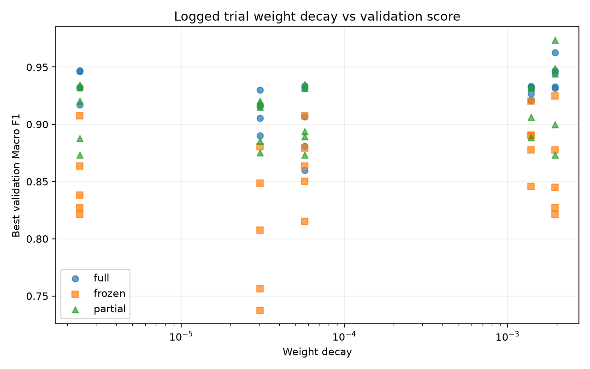
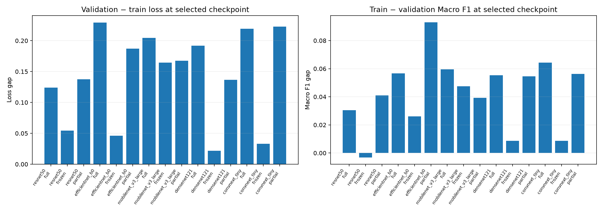
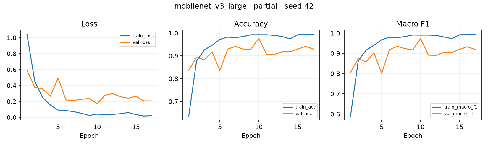
metrics: final/run_metrics.csv; configs/history: ไดเรกทอรี run ใน tuning/ และ final/; definitions: protocol.json, selection.json; pair summaries, class metrics, statistical tests และรูปภาพอยู่ใต้ out-dir เดียวกัน.